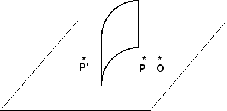

Purpose To explore qualitatively the properties of circle inversion using reflections
Materials Sheets of paper, pencil, compass, ruler with mm scale, colored
plexiglass
Background Inversion was introduced by Apollonious of Perga. Born around 262 BC, Apollonius studied under the successors of Euclid and introduced inversion in his last book, Plane Loci. Circle inversion is analogous to reflection over a line, with the circle taking the place of the reflecting line. Unlike reflection across a line, circle inversion has nonlinear properties. Reflections in a curved plastic sheet can simulate some properties of inversion. Colored plastic (red appears to work well) allows simultaneous viewing of the reflection and the objects behind the plastic.
Exercises
General instruction These exercises are best done with a partner: one person to hold the plastic sheet usually in a bent configuration, the other to sight and trace figures. Expect (small) experimental errors.